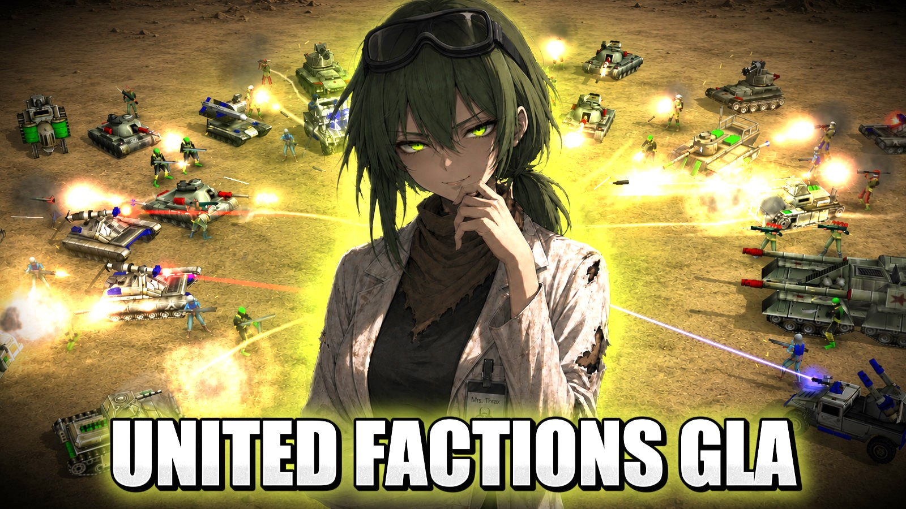
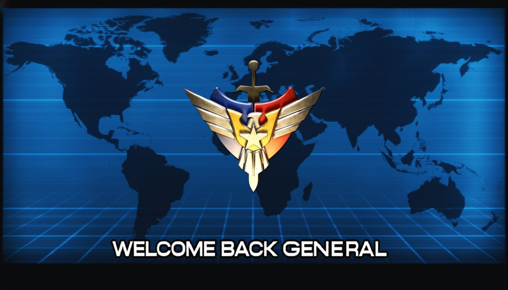

ABOUT THE MOD
United Factions is a modification for Command & Conquer: Generals – Zero Hour, featuring new military forces, custom units, advanced technology, and expanded warfare.
EXPLORE THE MOD →ABOUT THE CREATOR
A Command & Conquer creator making gameplay videos, custom maps, cinematics, and modding projects. Visit my YouTube channel to see my latest work.
VISIT MY YOUTUBE →